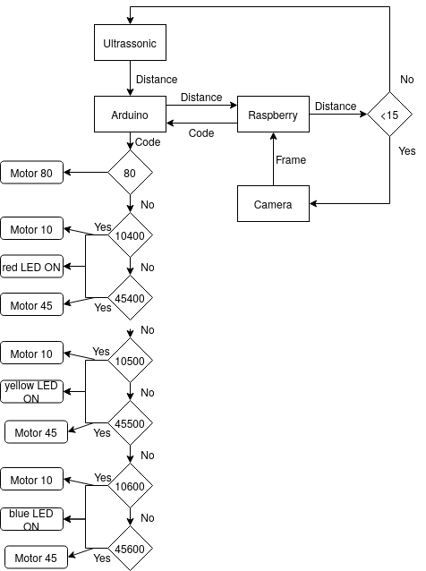

PhD: "Learning to Understand and Predict Heterogeneous Trajectory Data"
Robots and intelligent systems navigating dynamic environments must predict the intentions of surrounding agents to ensure safe and efficient operation. Trajectory prediction, which captures these intentions through motion patterns...
PhD: "Learning to Understand and Predict Heterogeneous Trajectory Data"
1. Motivation and Thesis Overview
The thesis can be found here. Robots and intelligent systems navigating dynamic environments must predict the intentions of surrounding agents to ensure safe and efficient operation. Trajectory prediction, which captures these intentions through motion patterns, is particularly challenging due to the highly diverse context of motion, expressed in agent-specific and environment cues. Despite this, many current prediction methods focus on homogeneous datasets, limiting their applicability in heterogeneous real-world scenarios. This thesis addresses motion heterogeneity by introducing the concept of trajectory classes, which group data samples based on shared characteristics, either observable (e.g., agent type, activity) or learned from the data itself. These classes are priors for effectively modeling diverse behaviors. However, existing literature lacks both suitable datasets and frameworks to exploit trajectory classes. To bridge this gap, the thesis introduces THÖR-MAGNI, a large-scale dataset capturing diverse human activities in industrial robotics environments. Using this dataset and a real-world autonomous driving dataset,the thesis proposes deep learning-based prediction models conditioned on observable classes, highlighting trade-offs between scalability, data efficiency, and performance under class imbalance. While observable classes enhance prediction accuracy, their static nature can limit their representation power, given the dynamic behavior of humans. To overcome the limitations of static class labels, THÖR-MAGNI Act introduces fine-grained, frame-level action annotations. Actions augmenting the state representation of trajectories have been shown to enhance predictions when integrated via direct conditioning or multi-task learning. Alternatively, data-driven classes group trajectories based on motion patterns learned from the data. We propose a novel Self-Conditioned GAN to learn trajectory clusters aligned with generative modeling objectives. Our method enhances prediction accuracy for underrepresented behaviors and is integrated into a multi-stage prediction framework that explicitly conditions predictions on trajectory clusters, yielding probabilistically informed forecasts. In summary, this thesis contributes datasets, predictive models, and generative frameworks for understanding and predicting heterogeneous trajectory data.
2. Notation and Terminology
- Vectors are denoted by bold lowercase letters, e.g., v.
- Matrices are denoted by bold uppercase letters, e.g., M.
- We refer to the Frobenius or Euclidean norm of a vector v as ||v||F.
- We denote the prior probability of an event by P(.) and the probability of an event conditioned on a different event as P(.|.).
- Subscripts are frequently used to indicate relationships between different mathematical objects; for instance, YS denotes a matrix Y that is associated with the matrix S in some way.
- We use the subscript t to indicate time steps, e.g. st and st+1.
The term training or validation trajectory dataset refers to a collection of trajectories represented as a 3D tensor (i.e., all trajectories are of equal length), where the first axis corresponds to the number of trajectories, the second to the time steps, and the third to the state representation of a dynamic agent. A trajectory represents a dynamic agent's position profile, typically in a two-dimensional plane, over a given period. An agent refers to any observable dynamic object whose position is being tracked, such as humans, mobile robots, human-driven vehicles, autonomous vehicles, or cyclists, whose states can be computed. An agent's states are derived from its tracked trajectory cues, such as position and head orientation, and may include additional time-varying attributes like velocity, acceleration, or actions. Each agent may belong to an observable class, which characterizes the agent type (e.g., pedestrian or car in a road scenario) or the agent's ongoing activities (e.g., transporting an object in an industrial setting). In this case, all trajectories of an agent belong to the same class. Moreover, a trajectory may belong to a learnable class denoted by data-driven class, which relies on unsupervised trajectory cues processing. An agent can also per- form fine-grained actions, which may or may not be unique to its class and form part of its state as they vary over time.
Trajectory prediction or forecasting involves estimating future states, potentially with a different configuration from the observed states, based on past state observations and relevant contextual information, such as the locations of other agents or obstacle maps. The prediction spans a predefined prediction horizon, which is the period from the last observed time step to the final point in time for which predictions are made. We use the terms observed trajectory and tracklet interchangeably to refer to the sequence of observed states. A tracklet spans a predefined observation horizon, which covers the period from the first time step to the last observed time step. Joint trajectory and action prediction involves predicting both future trajectories and the sequence of future actions simultaneously. Class-conditioned trajectory prediction or forecasting involves trajectory prediction conditioned on the corresponding class. Action-conditioned trajectory prediction or forecasting refers to trajectory prediction where the observed states include the observed sequence of fine-grained actions. Multi-task trajectory and action prediction or forecasting refers to the joint prediction of future trajectories and action sequences, where the observed inputs may optionally include the sequence of observed fine-grained actions.
Dynamic agents generate trajectory data, each denoted as \(A_i\) and associated with an observable class \(c_{A_i}\). Agent trajectories are converted into tracklets of fixed-length \(\mathbf{S} = (\mathbf{s}_t)_{t=1}^{O}\). The states \(\mathbf{s}_t\), depending on the dataset, trajectory modeling task, and predictive model, may consist of various configurations: only 2D velocities \(\mathbf{s}_t = (\dot{x}_t, \dot{y}_t)\); 2D positions and velocities, i.e., \(\mathbf{s}_t = (x_t, y_t, \dot{x}_t, \dot{y}_t)\); or including the action \(a_t\), i.e., \(\mathbf{s}_t = (x_t, y_t, \dot{x}_t, \dot{y}_t, a_t)\). Action labels represent an agent's fine-grained actions at each time step from a predefined set of actions \(\mathcal{A}\). In contrast to observable classes, which remain constant for all trajectories of an agent, action labels can vary at each time step, influencing human trajectory and capturing its heterogeneity. The \emph{future} of an observed tracklet consists of 2D velocities, \(\mathbf{Y_S} = ((\dot{x_t}, \dot{y_t}))^{T_P}_{t=O+1}\) of length \(L = T_P - O\), which are subsequently converted into future positions \(\mathbf{P_S}\). The future sequence of actions temporally aligned with \(\mathbf{Y_S}\) is denoted by \(\mathbf{a_S} = (a_t)_{t=O+1}^{T_P}\), \(a_t\in \mathcal{A}\).
3. Contributions and Insights
The main intuition of this thesis is that robots share space with dynamic agents in anthropocentric environments. The behaviors of dynamic agents are shaped by a complex interplay between external and internal factors. External factors include the physical environment, social norms, and interactions with other agents. Internal factors encompass individual goals, intentions, and psychological states.
This thesis addresses the challenges of discovering and modeling trajectory heterogeneity, a phenomenon arising from these factors, as trajectory classes, which group trajectories based on perceived appearance or trajectory cues. These classes can originate from two primary sources: observable classes, defined by human semantics and accessible via perception systems, and data-driven classes, which are automatically learned from the structure and dynamics of the trajectory data. We find these classes in human motion trajectories datasets, where observable classes can be detected through robot perception and data- driven classes are directly found from the data. External and internal factors affect measurable trajectory cues, such as velocity, acceleration, heading, ongoing action, etc., which can be used to detect/infer the trajectory classes. Finally, we incorporate trajectory classes both observable and data- driven into trajectory prediction methods to enhance trajectory predictions. The figure below depicts the main concepts of this thesis.
The main contributions of this thesis are:
- THÖR-MAGNI, a large-scale trajectory dataset capturing diverse human activities in industrial robotics environments, including fine-grained action annotations, THÖR-MAGNI Act.
- Deep learning-based trajectory prediction models conditioned on observable classes, highlighting trade-offs between data efficiency and performance under class imbalance. The respective paper can be found here.
- A novel Self-Conditioned GAN to learn data-driven trajectory clusters aligned with generative modeling objectives, enhancing prediction accuracy for underrepresented behaviors.
- A multi-stage prediction framework that explicitly conditions predictions on trajectory clusters, yielding probabilistically informed forecasts.
 The data collection implies people performing different roles (i.e., activities tailored to industrial tasks). In addition,
we include a robot in the scene as a static or dynamic obstacle affecting the semantic layout of the environment. Finally, some scenarios
include conditions to study specific aspects or factors affecting human motion. The table below summarizes the data collection.
Learning Outcomes:
The observable classes in THÖR-MAGNI underlying the human roles demonstrate distinct motion patterns that could be important for trajectory prediction in robotics environments.
The data collection implies people performing different roles (i.e., activities tailored to industrial tasks). In addition,
we include a robot in the scene as a static or dynamic obstacle affecting the semantic layout of the environment. Finally, some scenarios
include conditions to study specific aspects or factors affecting human motion. The table below summarizes the data collection.
Learning Outcomes:
The observable classes in THÖR-MAGNI underlying the human roles demonstrate distinct motion patterns that could be important for trajectory prediction in robotics environments.
 In the end, the dataset contains 14 unique actions:
$$
\begin{aligned}
\mathcal{A} = \{ & Walk, DrawCard, ObserveCardDraw, WalkLO, \\
& PickBucket, WalkBucket, DeliverBucket, PickBox, \\
& WalkBox, DeliverBox, PickStorageBin, \\
& WalkStorageBin, DeliverStorageBin, HRI \}
\end{aligned}
$$
The intuition is that such fine-grained actions can incorporate the sequence of input states reducing ambiguity as they decompose the observable class in a time-varying sequence of actions.
To that end, such actions must be also diverse and heterogeneous to capture the complexity of human motion. The figure below illustrates the statistics of motions cues, such as acceleration, velocity,
and navigation distance across the actions in THÖR-MAGNI Act.
To show that actions can be powerful cues for trajectory prediction, we propose two predictive systems based on the single-output methods presented earlier.
First, by augmenting the input state representation, we introduce an additional dimension to the state representation, the action. The new state representation is processed by
the encoder, and the resulting vector goes directly to the decoder or can be concatenated with the observable class. Then, the trajectory decoder processes the concatenated vector and
outputs the sequence of velocities. We use the mean squared error loss function to train this model.
We also studied a multi-task learning model (green) where future sequences of actions are predicted.
To that end, we add a decoder for future sequences of actions trained using binary cross-entropy loss for multi-class classification problems.
From the experiments, we have found that both action-conditioned and multi-task models outperform the observable class-conditioned model and the baseline model that does not use any class information.
Learning Outcomes: Actions can enhance trajectory prediction by mitigating some of the ambiguity present in observable classes.
In the end, the dataset contains 14 unique actions:
$$
\begin{aligned}
\mathcal{A} = \{ & Walk, DrawCard, ObserveCardDraw, WalkLO, \\
& PickBucket, WalkBucket, DeliverBucket, PickBox, \\
& WalkBox, DeliverBox, PickStorageBin, \\
& WalkStorageBin, DeliverStorageBin, HRI \}
\end{aligned}
$$
The intuition is that such fine-grained actions can incorporate the sequence of input states reducing ambiguity as they decompose the observable class in a time-varying sequence of actions.
To that end, such actions must be also diverse and heterogeneous to capture the complexity of human motion. The figure below illustrates the statistics of motions cues, such as acceleration, velocity,
and navigation distance across the actions in THÖR-MAGNI Act.
To show that actions can be powerful cues for trajectory prediction, we propose two predictive systems based on the single-output methods presented earlier.
First, by augmenting the input state representation, we introduce an additional dimension to the state representation, the action. The new state representation is processed by
the encoder, and the resulting vector goes directly to the decoder or can be concatenated with the observable class. Then, the trajectory decoder processes the concatenated vector and
outputs the sequence of velocities. We use the mean squared error loss function to train this model.
We also studied a multi-task learning model (green) where future sequences of actions are predicted.
To that end, we add a decoder for future sequences of actions trained using binary cross-entropy loss for multi-class classification problems.
From the experiments, we have found that both action-conditioned and multi-task models outperform the observable class-conditioned model and the baseline model that does not use any class information.
Learning Outcomes: Actions can enhance trajectory prediction by mitigating some of the ambiguity present in observable classes.
 Learning Outcomes: Full- and future-driven clusters are the most suitable for trajectory prediction.
Self-conditioned GAN is a powerful clustering method connecting the clustering and the trajectory prediction objectives.
Learning Outcomes: Full- and future-driven clusters are the most suitable for trajectory prediction.
Self-conditioned GAN is a powerful clustering method connecting the clustering and the trajectory prediction objectives.
 For the approach (1), we simply use the clustering space learned by SC-GAN and the results obtained by the SC GAN to force other
GAN-based forecaster to learn specific motion patterns.
To that end, we propose a new loss function that forces the generator to predict best the trajectories coming from clusters where the SC GAN failed the most.
This is done by computing the mean squared error (MSE) between the predicted trajectory and the ground truth trajectory for each cluster and penalizing it more
based on the average displacement error and the final displacement error. The former measures the average L2 distance between the predicted trajectory and the ground truth trajectory over all time steps.
The latter measures the L2 distance between the final predicted position and the corresponding ground truth.
These two metrics are widely used in trajectory prediction to evaluate the accuracy of predicted trajectories.
The figure below illustrates predictions from penalized prediction systems versus the baseline model (without penalization).
For the approach (2), we propose a multi-stage prediction framework that explicitly conditions trajectory predictions on data-driven clusters.
The first step is to transform the data into displacements, for example, to make it more generalizable to other datasets.
Then, we cluster these displacements using the full-cluster SC GAN, k-means, or time-series k-means.
Next, we train a deep generative model conditioned on the correct cluster classes to produce the future sequence of states. During inference, we sample one trajectory per cluster.
With one prediction per cluster class, we rank the future trajectories using distance metrics and transform them into a probabilistic space.
How do we do that? We apply a soft-argmax function based on the distance: (1) between the produced sample and the corresponding centroid; or, between the produced sample and the \(N_{neig}\) neighbors from the corresponding cluster.
This approach follows the intuitive idea that a sample produced based on the correct cluster will always be closer to the cluster than the samples produced from other clusters and the samples within those clusters, as can be seen in the figure below.
Our prediction framework proved to be more effective than unconditional baselines. Also, our predictions raking methods are both efficient and effective comparatively to neural networks.
Learning Outcomes: SC GAN can help mitigating the mode collapse problem in GAN-based trajectory forecasters.
The multi-stage prediction framework effectively leverages data-driven clusters to enhance trajectory prediction accuracy and our predictions ranking methods are both efficient and effective.
For the approach (1), we simply use the clustering space learned by SC-GAN and the results obtained by the SC GAN to force other
GAN-based forecaster to learn specific motion patterns.
To that end, we propose a new loss function that forces the generator to predict best the trajectories coming from clusters where the SC GAN failed the most.
This is done by computing the mean squared error (MSE) between the predicted trajectory and the ground truth trajectory for each cluster and penalizing it more
based on the average displacement error and the final displacement error. The former measures the average L2 distance between the predicted trajectory and the ground truth trajectory over all time steps.
The latter measures the L2 distance between the final predicted position and the corresponding ground truth.
These two metrics are widely used in trajectory prediction to evaluate the accuracy of predicted trajectories.
The figure below illustrates predictions from penalized prediction systems versus the baseline model (without penalization).
For the approach (2), we propose a multi-stage prediction framework that explicitly conditions trajectory predictions on data-driven clusters.
The first step is to transform the data into displacements, for example, to make it more generalizable to other datasets.
Then, we cluster these displacements using the full-cluster SC GAN, k-means, or time-series k-means.
Next, we train a deep generative model conditioned on the correct cluster classes to produce the future sequence of states. During inference, we sample one trajectory per cluster.
With one prediction per cluster class, we rank the future trajectories using distance metrics and transform them into a probabilistic space.
How do we do that? We apply a soft-argmax function based on the distance: (1) between the produced sample and the corresponding centroid; or, between the produced sample and the \(N_{neig}\) neighbors from the corresponding cluster.
This approach follows the intuitive idea that a sample produced based on the correct cluster will always be closer to the cluster than the samples produced from other clusters and the samples within those clusters, as can be seen in the figure below.
Our prediction framework proved to be more effective than unconditional baselines. Also, our predictions raking methods are both efficient and effective comparatively to neural networks.
Learning Outcomes: SC GAN can help mitigating the mode collapse problem in GAN-based trajectory forecasters.
The multi-stage prediction framework effectively leverages data-driven clusters to enhance trajectory prediction accuracy and our predictions ranking methods are both efficient and effective.
Reinforcement Learning
Similarly to what I have done with the bag of models for Deep Learning, here I present my Reinforcement Learning studies. It comprises some playground projects where I use reinforcement learning to train agents...
Reinforcement Learning
1. Context
Similarly to what I have done with the studies for Deep Learning, here I present my Reinforcement Learning studies. It comprises some playground projects where I use reinforcement learning to train agents to accomplish some behavior required from a given task withing a given environment. The whole idea is that we make an agent interact with an environment and learn from it. That environment can be a game, a robot, or even a real-world problem. The idea is that such environment is able to return a reward to the agent, which is the feedback that the agent receives from its actions. The agent's goal is to maximize the reward it receives from the environment. The agent learns by trial and error, exploring the environment and trying different actions to see what works best. To that end, the agent's goal is to learn a policy that maps states to actions, so it can take the best action in each state. To make the problem easier to solve, neural networks can be used to approximate the policy. In that case, Deep Reinforcement Learning emerges as the research topics to study.
2. Outline
Everything started by the study of the Sutton and Barton's book that one can find here. Then, I attended the free recorded lectures of Hado van Hasselt, who follows the same book but provides deeper and insightful explanations of some of the examples of the book. I defend the principle of learning by doing. In this way, I have watched the full Reinforcement Learning course from deeplizard. Finally, I followed the Spinning Up documentation, which I strongly suggest for those who aim to learn Deep Reinforcement Learning. In doing so, I have been deploying a few of the most well-known Deep Reinforcement Learning algorithms and doing some funny experiments.
3. Practice
This Deep RL library of algorithms is an ongoing project. So, at this time there is the CartPole environment solved by the following PyTorch implementations:
- Vanilla Policy Gradient or REINFORCE
- DQN
- A3C
During my experiments I have implemented both default states and images observations. I could not make it for the A3C due to the limitation of the render provided by OpenAI. In the meanwhile, for those interested, I suggest to check the official repo for more information and (personal) explanations. You can check the repository at tmralmeida. I also had the opportunity of using one of these RL frameworks in one of the courses I took during my Ph.D. Therefore, I was asked to develop a vacuum cleaner AI-based agent whose goal is to clean a grid world environment. In this environment, the AI-based agent may encounter obstacles and dirty cells. In this way, I've trained REINFORCE to solve this problem, and the results can be found on this repo.
Smart Shower App
This is a homemade project that emulates a smart hands-free shower/tap. This POC is based on a low-cost prototype composed of a Raspberry Pi 3b+, a picamera, an ultrasonic, 3 LEDs, and a servo motor.
smart-shower Project
1. Description
This is a homemade project that emulates a smart hands-free shower/tap. This is a POC based on a low-cost prototype composed of a Raspberry Pi 3b+, a picamera, an ultrasonic, 3 LEDs, and a servo motor. At the time of publication of this idea, there are difficult times in the world due to Coronavirus. This virus is characterized by being difficult to control due to its easy spread. Therefore, the idea behind this smart system is reducing the spread of diseases such as Coronavirus in public bathing facilities through totally hands-free and intelligent showers and taps.
2. Idea
There are a lot of hands-free taps and showers but I have never seen one that could control the flow and temperature of water smartly and intuitively. Hence, the objective here is to control both flow and temperature by the location of the hands in relation to the tap. It is as if we placed an XY-plane coordinate system in front of the tap sensor, with the x-axis (horizontal) being the temperature and the y-axis (vertical) the flow. Then, the more to the right our hand is on the tap, the hotter the temperature will come out and, similarly for the vertical axis, the higher above the tap, the higher the flow.
3. Practice

According to the image above that represents the entire workflow, the raspberry and arduino are always in communication. Therefore, arduino continuously sends the distance to the raspberry until it is less than 15. At this point, one hand is in front of the sensor, which triggers the camera. Then the raspberry computes the code that corresponds to the hand location. This code is sent to the arduino that yields the respective outputs to each electronic device (LEDs and motor). Please, note that:
- Motor 80 corresponds to a closed tap;
- Motor 10 corresponds to a fully open tap;
- Motor 45 corresponds to a partly open tap;
- Yellow LED corresponds to mild water;
- Blue LED corresponds to cold water;
- Red LED corresponds to hot water.
Thus, the final system would be composed by a 3D ultrasonic sensor that in this prototype is represented by the usage of a simple ultrasonic and a camera.
You can check the repository at tmralmeida. Below there is a representative video.
Deep Learning
Mar - July 2020
This is a guide for Deep Learning practitioners. It covers Tensorflow and Pytorch techniques to train the best-known models for Image Classification and...
Deep Learning Studies
This is a guide for Deep Learning practitioners. It covers Tensorflow and Pytorch techniques to train the best-known models for Image Classification and Object Detection fields. At the beginning of my journey of learning this topic in practice, the most difficult thing for me was filtering out all the information, because every practitioner has one repository and it seems that they have results but their code is too complex for a beginner. Therefore, I started with a Tensorflow Specialization and as I was learning, I was doing my test cases for myself. In my opinion, the easiest way to start is with Image Classification because it does not resort as much as effort as the other fields. The effort here is important, because it is an effort related to the complexity of conceiving the model in practice, so less effort means a more understandable and easier code. Thus, I started to download one dataset (CINIC10), then I tried to replicate the models training, which I was studying through the respective papers (I went from AlexNet to MobileNet). The code is not the most efficient one but it was done by a beginner so I hope that it is clear enough.
After Image Classification, I wanted to study Object Detection, which seems a trendy Computer Vision task but it was difficult to assimilate all the little tricks behind each choice of the authors of the most well-known architectures. At the same time, in my work the opportunity of working also in Object Detection arose. So, it was a win-win situation. First, I attend the deeplizard course about Pytorch because I wanted to know all the decent possibilities I had in terms of Deep Learning frameworks. Hence, Pytorch was used to study those architectures (from Faster R-CNN up to YOLOv4).
Now, you can decide which of the branches of this project you want to check:
Image Classification
First of all, for data loading I used in every model the tf.data module. It allows to create a full pipeline that aggregates: loading from disk, data augmentation, and batch formation. I did not go too deep into augmentation because the objective at this point would be to practice the models creation and try to understand the various ways of doing it by using Tensorflow2.0. In my opinion, there are three global ways to deploy a Tensorflow model, whose usage depends on the architecture's layout. If the model is straightforward (the easiest ones) we can use the Sequential API; on the other hand, if the model resorts layers concatenation and "parallel operations" (more complex models), we should use the Functional API; finally, if we want a fully-customizable foward propagation we can use Model subclassing.
During this study, I just used the Sequential API for the easiest models and the Functional API for the more complex ones. Therefore, the first three models - AlexNet, ZFNet and VGG16 - were created under the Sequential API due to their simple design. The remaining models - ResNet18, GoogLeNet, Xception and MobileNet - were designed through the Functional API.
Theoretically, it is important to highlight some key points in the history of Convolutional Neural Networks for Image Classification, which are now used or have an influence on the most modern architectures:
- AlexNet is the first Convolutional Neural Network that obtained a quite important result in the ImageNet challenge;
- ZFNet showed how it would be possible to improve the network's layout by visualizing what is going on inside of it;
- VGG16 showed that deeper convolutional neural networks can be more accurate than shallower networks;
- The more layers a neuronal network has, the harder it is to train. Thus, ResNet showed how it is possible to train deep neural networks in a simpler fashion by applying residual blocks with skip connections. The image below demonstrates this design choice (from Dive Into Deep Learning); the left image represents the original residual block and the right image illustrates the residual block with the respective skip connection - trick that makes the network training easier.
You can check all notebooks at tmralmeida.
Object Detection
As mentioned before, the study of object detection in this project came at the same time as a task that I had to complete professionally. At that time, I was studying object detection architectures in different road environments for autonomous driving. Therefore, after studying several available datasets, the one that proved to be most representative in terms of the quality/diversity of information ratio was the BDD100K. This dataset is composed of several different types of annotations, and the one we worked on (road object bounding boxes) is divided into 10 different classes: bus, light, sign, person, bike, truck, motor, car, train, and rider.
After choosing the dataset, I also study the state-of-the-art of Object Detection arquitectures. From here, two major types of architectures for the Object Detection task arose: proposals networks and single shot methods. The former is represented by Faster R-CNN, which I had already used in another project. The latter is composed of SSD (Single Shot Detection) and all versions of YOLO. Hence, these are the architectures that I would use to perform this study. Since I had deadlines to present results in my work, the models that I used here are not originally made by me, but based on works of other authors as I will reference later.
1. Faster R-CNN
Faster RCNN is one of the most widely used deep learning models for object detection. Although, its high-latency comparing to single-shot methods, Faster RCNN is performant detecting both small and large objects. The authors of this DL architecture divide the overall architecture into 2 modules, however, it is fairer to divide it into 3 modules: feature maps extractor, RPN (Region Proposals Network) and Fast R-CNN detector. The former is composed of a traditional classification architecture, which is responsible for producing feature maps. In our approach we choose a MobileNetV2 to perform this task due to its low-latency. After that, a small network slides over the feature maps predicting multiple possible proposals for each of its cells. This small network returns a lower-dimensional feature, which is then fed to two 1 * 1 convolutional layers. These layers yield the probability of a proposal bounding a target, and the encoded coordinates of each proposal, respectively. Finally, the features that correspond to objects pass through an ROI pooling layer that crops and rescales each feature. During inference, the non-maximum suppression (NMS) algorithm is computed to filter out the best-located bounding boxes.
The work that we developed here in terms of training and model creation was based on the torchvision module of Pytorch framework.
The numeric results for the validation set, based on COCO metrics are represented in the table below.
| IoU Thresholds | Scales | maxDets | AP/AR values | |
|---|---|---|---|---|
| AP | [0.50 : 0.05 : 0.95] | all | 100 | 0.202 |
| 0.50 | all | 100 | 0.409 | |
| 0.75 | all | 100 | 0.175 | |
| 0.95 | small | 100 | 0.050 |
|
| [0.50 : 0.05 : 0.95] | medium | 100 | 0.243 |
|
| [0.50 : 0.05 : 0.95] |
large | 100 | 0.432 |
|
| AR | [0.50 : 0.05 : 0.95] | all | 1 | 0.158 |
| [0.50 : 0.05 : 0.95] | all | 10 | 0.277 | |
| [0.50 : 0.05 : 0.95] | all | 100 | 0.290 | |
| [0.50 : 0.05 : 0.95] | small | 100 | 0.116 | |
| [0.50 : 0.05 : 0.95] | medium | 100 | 0.355 |
|
| [0.50 : 0.05 : 0.95] | large | 100 | 0.519 |
Finally, I release videos that demonstrate part of the qualitative results of the trained model in frames acquired in Aveiro roads. One example of those videos is shown below.
2. SSD512
Single shot models can process the input faster due to the respective tasks - localization and classification - be done in a single forward fashion. Here, SSD is presented as well as its results in the validation set of the dataset used in this work. This architecture is characterized by its base network (or backbone), the usage of multi-scaled feature maps for the detection task, and the respective convolutional predictors. MobileNetV2 was used to perform the perception of the image features and then was truncated before the classification layers. Hence, some of the final layers of MobileNet and additional feature layers allow multiple scales predictions. Each of these extra layers can produce a fixed set of detection predictions using a set of convolutional filters. Finally, the output of the model is the score for a category and the location of the box that bounds the target object.
This work, in terms of code, is based on the one of qfgaohao. However, here I did some adaptations to increase the performance of the model. One of them is the 512*512 input size.
Finally, the numeric results for the BDD100K validation set are represented in the table below.
| IoU Thresholds | Scales | maxDets | AP/AR values | |
|---|---|---|---|---|
| AP | [0.50 : 0.05 : 0.95] | all | 100 | 0.083 |
| 0.50 | all | 100 | 0.131 | |
| 0.75 | all | 100 | 0.085 | |
| 0.95 | small | 100 | 0.002 |
|
| [0.50 : 0.05 : 0.95] | medium | 100 | 0.044 |
|
| [0.50 : 0.05 : 0.95] |
large | 100 | 0.293 |
|
| AR | [0.50 : 0.05 : 0.95] | all | 1 | 0.068 |
| [0.50 : 0.05 : 0.95] | all | 10 | 0.093 | |
| [0.50 : 0.05 : 0.95] | all | 100 | 0.093 | |
| [0.50 : 0.05 : 0.95] | small | 100 | 0.005 | |
| [0.50 : 0.05 : 0.95] | medium | 100 | 0.052 |
|
| [0.50 : 0.05 : 0.95] | large | 100 | 0.334 |
Although a huge difference between the numerical results for the validation set between the two architectures presented so far, this model is also performant on Aveiro roads. Please, check the video below.
3. YOLOV4
All YOLO architectures are also single-shot methods, and that is why they achieve high-speed predictions. The authors have been presenting several evolutions, which is proved by the amount of YOLO versions that exist - 4 until the writing date of this post (YOLO, YOLOv2, YOLOv3, and YOLOv4). This architecture has always shown low-latency and, therefore, what has been the focus along the various versions is the localization performance. YOLOv4 is composed of a Cross Stage Partial (CSP) Darknet53 with an SPP module, a path-aggregation net (PANet), and a YOLOv3 head. CSP networks have similar basis and purposes to a DenseNet. Therefore, this type of architectures enhances the features reuse by reducing the amount of repeated gradient information observed in a DenseNet. To do so, it divides the base feature map, then a part of the channels passes through a partial dense block and the other part undergoes to the final partial transition layer. After activation maps production, the only difference between YOLOv3 and YOLOv4 in terms of architecture's layout is the global features concatenation. Instead of the FPN technique, a custom PANet approach is performed. PANet is simply an enhanced version of FPN; after the FPN's block composed of a top-down pathway with lateral connections, PANet also propagates low-level features through a bottom-up path augmentation block. This block allows the addition (concatenation for YOLOv4) of the FPN resulting features with the output of those feature maps with 3*3 convolutions, which yields an even better understanding of the low-level features.
This work, in terms of code, is based on the one of Ultralytics with some changes to allow the usage of the Ignite framework.
Finally, the numeric results for the BDD100K validation set are represented in the table below.
| IoU Thresholds | Scales | maxDets | AP/AR values | |
|---|---|---|---|---|
| AP | [0.50 : 0.05 : 0.95] | all | 100 | 0.105 |
| 0.50 | all | 100 | 0.209 | |
| 0.75 | all | 100 | 0.092 | |
| 0.95 | small | 100 | 0.053 |
|
| [0.50 : 0.05 : 0.95] | medium | 100 | 0.223 |
|
| [0.50 : 0.05 : 0.95] |
large | 100 | 0.326 |
|
| AR | [0.50 : 0.05 : 0.95] | all | 1 | 0.107 |
| [0.50 : 0.05 : 0.95] | all | 10 | 0.220 | |
| [0.50 : 0.05 : 0.95] | all | 100 | 0.257 | |
| [0.50 : 0.05 : 0.95] | small | 100 | 0.187 | |
| [0.50 : 0.05 : 0.95] | medium | 100 | 0.467 |
|
| [0.50 : 0.05 : 0.95] | large | 100 | 0.511 |
I also deployed this model on a Nvidia Jetson AGX Xavier device and you can check the result in the video below and the demo code is available in tmralmeida.
You can check the repository at tmralmeida.
Data Matrix Detection
Mar 2020
This work presents an implementation of a Faster R-CNN model to detect Data Matrix. This architecture demonstrated quite accurate and consistent results by...
faster-rcnn-data-matrix Project
This work presents an implementation of a Faster R-CNN model to detect Data Matrix. This architecture demonstrated quite accurate and consistent results by detecting almost all landmarks throughout the test set.
It arose during my research work at University of Aveiro, Portugal. In this project, I went through every step of training a deep neural network: data collection (images of this type of landmarks in different environments); data labeling through the Labelbox app; then, the Faster R-CNN model was trained and evaluated through the Detectron2 platform, which is a research platform that contains several state-of-the-art models such as Faster R-CNN, Mask R-CNN, RetinaNet, and DensePose ready to use.
Advice: For those who don't have much time to design the architecture, this kind of platforms is totally worth it.
1. Dataset creation
The dataset is one of the most important pieces of the overall Machine Learning solution, since each decision of the model is based on a previous training, which is performed on that data. Therefore, if the training procedure has been compromised, then the inference quality of the model will be worse. Thus, in this stage of the work, we labeled correctly 156 training frames and 224 test images. This distribution of training/test sets is not either the most common one or the most correct one. However, the number of class objects to detect is just one, and, although it is a small patch of the image, it is a pretty distinguishable object from the rest of the image. So, the training set is equally composed of two different environments: a common laboratory room with several objects spread around and a workshop with machinery. These choices allow to obtain a more representative dataset. Regarding the test set, this is also equally distributed in two different enviroments: a hallway and a different part of the workshop used in the training set.
The two images below are 2 samples used in the training set. The left image represents an environment associated to a manufacturing facility and the right image represents a visually cluttered environment (many different objects) in a laboratory room.


Regarding the test set, two images are shown as examples: from a more visually neat environment (left image) to a more filled and cluttered one ( right image).

2. Faster R-CNN Training
We decided to use this architecture because this type of deep neural networks is very performant (in comparison to other object detection architectures) when the objective is to detect small patches of the image. Moreover, the system where this neural network would be used (an Automated Guided Vehicle) does not move at high speeds, so the high-latency disadvantage of a proposal network would not be a problem in this application. It is also worth mentioning that when you are at the phase of choosing which Machine Learning approach to use, you have to take into account the practical application where you are working at (Deep Learning is sometimes overkill for some applications, Machine Learning is much more than just Deep Learning).
The training procedure of a deep neural network can be divided into 3 main steps: data loading, forward propagation and back propagation. The first step in this work implied to register our dataset in the dataset catalog of Detectron2. This is no more than a function that translates our dataset in a dictionary with certain fields. You can check all these steps in my notebook. Finally, the second and third steps, Detectron2 makes everything by us, we just need to know how to use their API and choose some hyperparameters such as: batch size, learning rate, and the number of iterations.
3. Faster R-CNN Evaluation
The evaluation of the model was also performed through the Detectron2 API. To do so, we evaluate our model trough the COCO metrics (the figure below shows our results).

The most important overall result is 0.876 for AP@0.5. Why? Because 0.5 is a fair value for the IoU threshold, the scales are all and the number maximum of detections is 100 (a suitable value to match the reality). Moreover, the recall is higher than the precision, implying that the number of false positives is higher than the number of false negatives. This means that the model detects almost all the Data Matrix landmarks, but also detects some other objects that are not. In our system this is preferable since we use a Data Matrix decoder in a further step. So, if the detected object is not a Data Matrix, the decoder would return nothing. Comparing to the Data Matrix detection provided by libdmtx Python library, only 45% of the test set frames were accurately processed by this classical algorithm, being 40 times slower than the model that we trained in this project.
Finally, we show a video that demonstrate part of the qualitative results of the test set. The results shown here are not at the normal speed due to the video size (this is 1fps and our model can achieve 7.4fps).
You can check the repository at tmralmeida.